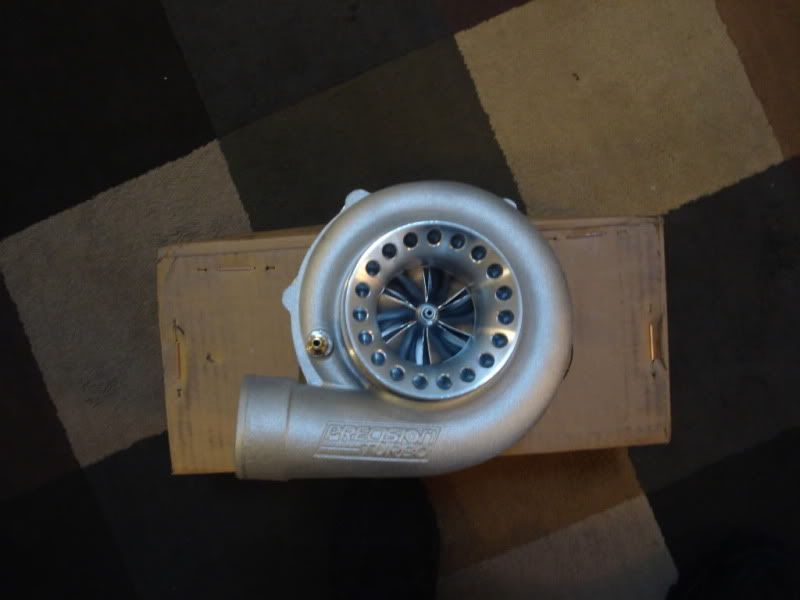

-
Hey guys, im posting pretty much to get other vg owners opinions about the turbo im seriously thinking about purchasing.
im thinking of going with the precision 6262. its a 62mm Billet compressor wheel and 62mm turbine wheel.its capable of 690hp and i read alot about these turbos on 4cyl evos running upwards of 30psi and 700hp!!!
now im not looking to run 30psi but i am going to be trying to push the stock bottom end of my vg, and also have enough turbo for when I do build the bottom end in the future, so you could say im looking for about that 500 crank hp number for a while
i want to be running the t3 .82ar with 3in vband for the exhaust side. and im also running the stage 3 schindler regrinds with the operation rpm range of 3000 to 7000.
I wonder if it will be a lag monster…? im trying to have a quick spool and a nice top end power band…what does every one think? all feed back would help to make this decision easier!!

-
I am interested too, I am running bigger schneider cams tho, and a satan exh. manifold. considering this one or the 6765 .. -
The 6262 and the 6765 are great turbos to choose and each one of them will give you your desire goal on horsepower with a great engine combination, more than 500RWHP. I personally runs a 6765 in my Z car and works great. Good luck with your project.Straights are for Fast Cars. Turns are for Fast Drivers.
Life Starts at 1.3Bar(17Psi). -
the 6262 is one badass turbo, i would reccommend that choice in BB over the 6265 or 6765 for a street car. On a vg33/34 i would recommend the 6265 though. With your housing selection and the BB option the spoolup would have a threshold of around 2800 with full boost 3200-3400, and will make 600whp at full tilt. I think the stock t3 manifold will be a restriction before the 62mm turbine will be.87 Turbo: Stock VG33, stock cams, maxima intake, T5, DXD stage 3 clutch, tubular stainless headers, GT3582r, full 3" stainless exhaust, E85 680cc inj. and Nistune
current time: 13.39@106, 2.05 60' 12psi with old stock 85T motor and street tires! -
Hitman Z wrote: The 6262 and the 6765 are great turbos to choose and each one of them will give you your desire goal on horsepower with a great engine combination, more than 500RWHP. I personally runs a 6765 in my Z car and works great. Good luck with your project.
you said you run the 6765? how is the spool up? what exhaust housing are you using how much boost and how much power oh and what cams?
And same questions to you Grr. and also i plan to rev to 7000 will this exhaust side restrict top end power?
Grr wrote: the 6262 is one badass turbo, i would reccommend that choice in BB over the 6265 or 6765 for a street car. On a vg33/34 i would recommend the 6265 though. With your housing selection and the BB option the spoolup would have a threshold of around 2800 with full boost 3200-3400, and will make 600whp at full tilt. I think the stock t3 manifold will be a restriction before the 62mm turbine will be. -
Bump need some experienced opinions here -
Hi friend. My Z turbo exhaust housing is .81. The cams are Schneider cams 274-70H, fully port and polish heads, performance valvesprings.............Straights are for Fast Cars. Turns are for Fast Drivers.
Life Starts at 1.3Bar(17Psi). -
very nice similar to my setup when does boost come on and wen is it at full boost? bb or journal? -
Boost starts around 3,000 to 3,200rpm with full boost at 3,800rpm. Its BB.TurboZkid wrote: very nice similar to my setup when does boost come on and wen is it at full boost? bb or journal?Straights are for Fast Cars. Turns are for Fast Drivers.
Life Starts at 1.3Bar(17Psi). -
[quote]Hitman Z wrote:How much power are you making and how much boost are you running?Originally posted by TurboZkid
I'm going with the same 6765 (without BB) on E85 w/1200cc injectors on a built VG33.
I already have all of the parts. I'm currently building the engine. It should be running before July…I hope.Shiro #443

-
[quote]Rick88ss wrote: [quote=Hitman Z]Hi friend. Well, I am waiting for next week to buy the 1,000cc injectors. Right now the Z has 850cc RC injectors with a Haltech ECU so Im running a low boost setting 15psi. We have currently the same engine and I wish you good luck in your project. By the way the power was 507rwhp with a reading of 11.2 on the wideband, so first I want to install the 1,000cc injectors, use hi octane gas to see how much power I can get from it and to see how much boost in a safe way it can handle. Personally I am expecting between 25 to 30psi but as I said in a safe way so I hope everything goes find with the project.Originally posted by TurboZkidStraights are for Fast Cars. Turns are for Fast Drivers.
Life Starts at 1.3Bar(17Psi).

Copyright © 2006–. All rights reserved. Privacy Policy